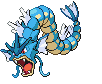
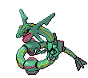

-
Bulbasaur #001

- Grama
- Veneno
Há uma semente de planta em suas costas desde o dia que este pokemon nasce. A semente cresce lentamente.
-
Ivysaur #002

- Grama
- Veneno
Quando o bulbo em suas costas cresce, parece perder a capacidade de ficar de pé em suas patas traseiras.
-
Venussaur #003

- Grama
- Veneno
Sua planta floresce quando está absorvendo energia solar. Ele permanesce em movimento para buscar a luz solar.
-
Charmander #004

- Fogo
Tem preferência por coisas quentes, quando chove diz-se que o vapor jorra da ponta da sua cauda.
-
Charmeleon #005

- Fogo
Charmeleon impiedosamente destrói seus inimigos usando suas garras afiadas. Se ele encontrar um adversário forte, fica muito agressivo.
-
Charizard #006

- Fogo
Suas asas podem transportar este Pokémon até uma altitude de 4.600 pés. Ele apaga o fogo em temperaturas muito altas.
-
Squirtle #007

- Água
Quando retrai seu longo pescoço em sua concha, esguicha água com força vigorosa.
-
Wartortle #008

- Água
É reconhecido como um símbolo de longevidade. Se sua casca tiver algas, aquele Wartortle é muito velho.
-
Blastoise #009

- Água
Ele esmaga seu inimigo sob seu corpo pesado para causar desmaios. Em uma pitada, ele se retirará para dentro de sua casca.
-
Caterpie #010

- Inseto
Caterpie tem um apetite voraz. Ele pode devorar as folhas maiores do que o seu corpo bem diante dos seus olhos. A partir de sua antena, este Pokémon libera um odor terrivelmente forte.
-
Gyarados #130
- Água
- Voador
Uma vez que aparece, ele entra em fúria. Ele permanece enfurecido até destruir tudo ao seu redor.
-
Mewtwo #150

- Psíquico
Seu DNA é quase o mesmo de Mew. No entanto, seu tamanho e disposição são muito diferentes.
-
Ampharos #181

- Dragão
- Elétrico
A luz brilhante em sua cauda pode ser vista de longe. Tem sido valorizado desde os tempos antigos como um farol.
-
Lugia #249

- Psíquico
- Voador
As asas de Lugia carregam um poder devastador - um leve bater de suas asas pode destruir casas comuns. Como resultado, este Pokémon escolhe viver escondido nas profundezas do mar.
-
Rayquaza #384
- Dragão
- Voador
Dizem que Rayquaza viveu centenas de milhões de anos. Lendas permanecem de como ele pôs fim ao confronto entre Kyogre e Groudon.